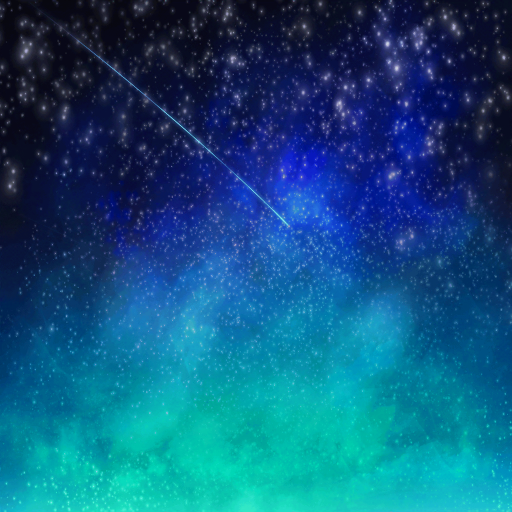

帰り道
つぐみ
……でね、あれがおおぐま座だよ！
つぐみ
おおぐま座の中にある、ひしゃくみたいな形になってる部分が
北斗七星って言うの
つぐみ
どれも明るい星でできてるから、すっごく見つけやすいんだよ！
巴
へぇぇ……
つぐって、本当に星に詳しくなったな

つぐみ
みんなで天体観測して以来、
ホントに好きになっちゃったんだ
つぐみ
家でも、ずっと星座の本を読んだりしてるんだ
巴
楽しそうで何よりだな
つぐみ
うん！
星座のこと調べてると、本当に楽しいんだよ
つぐみ
あ、そう言えば確か……
巴ちゃんは、おひつじ座だったよね？
巴
よく覚えてるな
つぐみ
友達の星座だもん。
忘れるわけないよ
巴
そっか。
アタシなんか、誕生日は覚えてても、
その日が何座になるとか、よくわかんないからな
巴
……あ、そうだ、つぐ。
おひつじ座って、どの辺に見えるんだ？
つぐみ
えっとね、残念ながらおひつじ座は、暗い星が多いから、
この辺じゃ見えないんだって
つぐみ
空気の澄んだ山とか、そういうところじゃないと、
なかなか見つけられないんだ
巴
そうなんだ。
それは残念だな
つぐみ
いつかみんなの星座を、一緒に見てみたいね！
巴
そうだな。
……あ、だけどさ、なんで羊が星座になったんだ？
なんか理由はあるの？
つぐみ
えーとね、おひつじ座になった羊は、
ギリシャ神話に登場する羊なんだよ
巴
へえぇ……

つぐみ
ある王様の２人の子供が生贄にされそうになった時、
神様が金色の羊を遣わせて、その２人の子供を背中に乗せて
助け出したんだって
巴
なるほど。
その羊がおひつじ座になったのか。
なんかいい話だな
つぐみ
誰かを助けるために頑張るっていうところが、
とっても巴ちゃんっぽいね
ふふふ……
巴
そうなんだ、知らなかった。
帰ったらあこに話してやろ
巴
……あ、そうしたら、あこはかに座なんだけど、
かに座はどうして星座になったんだ？
その話したら、きっとあこ、喜ぶぞ
つぐみ
……あ、あこちゃん……かに座、なんだ？
巴
そうなんだよ。
ちょっと理由を教えてくれよ
つぐみ
え、えっとね、かに座は確か……
ギリシャ神話の中に神様に退治されそうになった
兄弟を助けようとした蟹がいてね……
巴
おぉ！
兄弟を助けようとしたってところ、いかにもあこっぽいぞ。
それで？ それでどうなったんだ？
つぐみ
で、その蟹が、兄弟を助けるために
神様の足をハサミで挟もうとしたら……
巴
……うん、そしたら？
つぐみ
うぅ……これ以上は言えないっ！
巴
えっ？
別にいいだろ？ 教えてくれよ？
あこもきっと喜ぶからさ
つぐみ
巴ちゃん、私からは言えないよ……
巴
ちょ、ちょっと、つぐ！？
どうしたんだよ！？
いきなり挙動不審になったぞ！
つぐみ
そ、そんなことないから！
巴
続きが気になるから教えてくれって！
つぐみ
わ、私の口からは、こんな残酷なこと……言えないっ！
つぐみ
ご、ごめんね！ 巴ちゃん！
巴
つぐ、教えてくれよ～！！